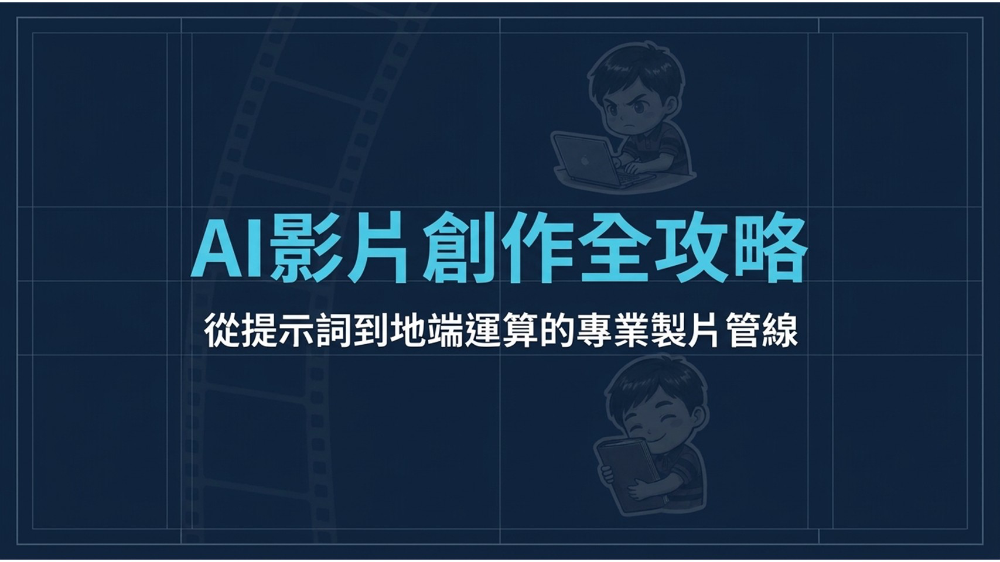

三顧茅廬
劉玄德雪夜顧臥龍 · 隆中定三分
歷史劇本與高潮梗概
加載中...
新北市資訊科技教育名師呂聰賢老師獨家研發！結合 Gemini 影片腳本 Agent 代理人、Nano Banana 2 / Google Flow (Veo 3.1) 首尾幀結構演算法，與 剪映 9 步後製包裝，以最低算力點數重構四面楚歌、三顧茅廬、王陽明悟道等撼動心靈的電影級歷史名場面。
從腳本文案到首尾幀視訊生成，再至剪映成片包裝，極速產出 32 秒高張力歷史短片。
安裝自訂 skill.md (ai-video)，選定歷史人物，精準生成 4 小段、每段 8 秒、共 32 秒首尾幀生圖與運鏡 Prompt。
輸入首幀與尾幀圖片，貼入電影級英文運鏡指令，下達「一律核准、連續生成」指令，低點數輸出 v1~v4 高清 MP4。
依序串接視訊、加入文字轉普通話旁白、AI 自動辨識字幕、字幕描邊、古典 BGM 混音與作者署名，無損匯出發布。
收錄聰賢老師親自指導與創作之 10 套史詩短劇（含旗艦十部曲《成吉思汗》），涵蓋三國、楚漢、春秋、盛唐、大明與南北朝傳奇。
加載中...
特別註明：本技能專為 Google Gemini (Gemline) 官方技能庫深度優化設計！由 黃文玉老師 (ayu) 授權研發，呂聰賢老師 1151115 研習指定為核心故事腳本與首尾幀提示詞生成大腦。
Skill 是把多步驟的「提示詞工程、鏡頭焦段、光線質感、角色一致性與生成模式」打包成標準 SOP。
只要安裝在您的 Google Gemini 帳號中，在對話框輸入英文半形 @ 即可一鍵呼叫，產出 100~200 字以上高精度微型視覺小說式提示詞，無縫對接 Google Flow (Veo 3.1)！
點擊畫面左下角或右上角個人頭像旁的「設定」，選擇「技能 (Skills)」。
點選「建立技能 (Add Skill)」，點擊上傳本站提供的 AI MV-SKILL.md 檔案（或直接貼入全文）。
命名務必使用英文小寫（例如 ai-video 或 ayu-ai-video），⚠️ 絕對不能包含中文或特殊符號！
在任何對話輸入框切換英文輸入法輸入 @，選取該技能，即可輸入主角與參數開始生成！
由 Gemini 一次輸出極度詳細的影片生成中文提示詞，包含旁白、對話、場景動態與攝影機運動，適合快速測試。
先生成「首幀圖片」中文提示詞，再提供「利用首幀生成影片」之運鏡與後續動態提示詞，可先定格構圖。
聰賢老師研習最強力推薦！分別給出「首幀」與「尾幀」構圖提示詞，再給出兩者間的物理過渡運鏡，生成成功率最高、畫面最穩！
---
name: ayu-ai-video-formula-custom
description: 協助產生自訂參數的AI短影片腳本、分鏡提示詞與素材設定。可自訂分段數、秒數、直橫式、風格及「影片生成方式（直出/首幀/首尾幀）」，並產生極度詳細的提示詞。
---
# AI 短影片腳本與分鏡提示詞生成器 (自訂參數+生成方式 終極版)
## Summary
這項技能將引導你協助使用者產出一套完整的「AI 影片生成公式」。此版本特別強化了「畫面細節、光影質感、構圖運鏡與動態物理」的極致描述，並且允許使用者選擇三種不同的「影片生成方式」。所有提示詞絕對不能只有一兩行，必須是非常詳盡的中文長篇敘述。對話及旁白必須指定為「中文普通話發音」。請在一次回覆中直接生成所有內容。
## When to Use
- 使用者要求製作 AI 短影片腳本或企劃，並可給定分段數、每段秒數、影片比例、影片風格，以及指定的影片生成方式。
- 使用者要求極度詳細的提示詞與中文普通話發音設定。
## Steps
當使用者提出影片主題與相關設定後，請在一次回覆中直接生成以下所有內容。**注意：所有的提示詞都必須「極度詳細且具體」（至少 100~200 字以上的段落描述），絕對不能只有短短一、兩行文字！**
### 1. 影片腳本與基礎設定
- **影片腳本**：規劃對應長度的短影片腳本。明確列出每一小段的劇情發展，並標示時間區間。
- **定裝照提示詞**：提供影片中「主要人物」的正、背、側面的定裝照「中文提示詞」。
- **終極細節要求**：鏡頭焦段、視角、具體光線、精確膚質與髮絲、布料紋理、畫質關鍵字(8k resolution, cinematic lighting 等)。
### 2. 分鏡與影片生成提示詞
根據使用者選擇的「影片生成方式」（若未指定，預設為方式3，或先詢問使用者），針對腳本中的「每一小段」提供對應的提示詞：
* **方式 1：直接由影片提示詞生成影片**
- 直接提供極度詳細的「影片生成中文提示詞」，包含「對話」及「旁白」、場景構圖、光線氛圍、人物站位表情、攝影機運動、動態與物理環境細節。
* **方式 2：首幀圖片 + 影片提示詞**
- 提供「首幀」圖片生成的中文提示詞（極度詳細的場景與人物構圖）。
- 提供「利用首幀圖片生成影片」的中文提示詞（包含「對話」及「旁白」，專注於攝影機運動、動態變化與後續動作）。
* **方式 3：首尾幀圖片 + 影片提示詞**
- 提供「首幀」與「尾幀」圖片生成的中文提示詞（極度詳細的場景與人物構圖變化）。
- 提供「利用首尾幀圖片生成影片」的中文提示詞（包含「對話」及「旁白」，專注於首尾幀之間的物理動態過渡與運鏡）。
**所有方式皆需包含：**
- **語音設定**：請提供「對話」及「旁白」的設定內容，並**明確標示「請使用中文普通話 (Mandarin Chinese) 來發音」**。
### 3. 影片包裝與配樂設定
- **吸睛劇名**：提供幾個吸引人的影片劇名建議。
- **封面提示詞**：極具視覺張力的封面中文提示詞 (不可少於 50 字，包含比例與風格)。
- **封底提示詞**：符合比例與風格的封底中文提示詞 (不可少於 50 字，帶有餘韻意境)。
- **背景音樂建議**：適合氛圍、長度符合總秒數的背景音樂 (BGM) 風格描述與提示詞。
## Gotchas
- 確認使用者是否給定：段數、秒數、比例、風格、以及「影片生成方式 (1, 2, 或 3)」。若無，請先詢問確認。
- **⚠️ 嚴格禁止簡短提示詞**：每個生成的提示詞（定裝照、首幀、尾幀、影片）**絕對不能只有一、二行**，必須是 100-200 字以上的高質量微型視覺小說描述，以確保生成品質。
- 所有提示詞務必是「中文」。影片對話與旁白必須強調「中文普通話發音」。
- 務必在「同一次回覆中」完整產出。
點選任一歷史人物，即刻自動合成聰賢老師獨家「4 小段、每段 8 秒、共 32 秒」首尾幀生成 Prompt！
貼上腳本後，鍵入 Shift + Enter 換行，加上指令：「請生成首尾幀圖片，再生成第1段影片，加上音效與普通話旁白。使用相同方法將2,3,4段依序生成。一律核准所有工作命令，不再詢問確認！」即可實現全自動批次運算。
徹底告別 AI 人物「每幀變臉」與服裝漂移！聰賢老師解構多視角定妝照與聲線鎖定法門。
錨定面部五官骨相、眉宇氣質、瞳孔色澤與髮髻髮飾，建立高精度人臉識別基底。
呈現鼻樑挺拔度、下顎線弧度與立體服裝剪裁，確保斜角運鏡時空間關係不塌陷。
定義頭飾厚度、後腦輪廓、佩劍懸掛位置與衣褶垂墜感，提供流暢轉身過渡幀。
展示背部披風圖騰、鎧甲鱗片編織與腰帶束帶細節，支撐背影離去之大師鏡頭。
在生圖模型（Imagen 3 / Nano Banana 2）中輸入以下模板，即可產出純白背景、16:9 電影規格的角色三視圖：
Character Sheet of an ancient Chinese martial arts warrior / historical hero, 16:9 aspect ratio, pure white background.
Orthographic multiple views in a single frame: full-body front view, 45-degree angle view, profile side view, and back view.
At the bottom, an Expressions Panel featuring: calm determination, fierce battle shout, and gentle smile.
Extremely detailed historical costume with silk embroidery, leather armor plates, and ornate sword scabbard.
Photorealistic cinematic style, 8k resolution, studio lighting, hyper-detailed facial consistency.
包含 1151115 最新影片創作全攻略 33 頁、Google Flow 工作流程、安裝上手、虛擬分身、角色固定與剪映後製全系列！

整合 1151115 實作課程 NotebookLM 會議筆記、Markmap 課程架構心智圖與全套講義 PPTX / 寬版海報

採用純前端 Markmap 向量引擎，涵蓋「課前準備、建立 Skill、故事腳本、Google Flow 製作、素材剪輯」五大維度。
遵循聰賢老師標準 SOP，將生成的多段視訊整合為院線級歷史短片成片。
將下載的 v1~v4 視訊片段、封面/封底圖片及 BGM 配樂批量拉入素材庫。
依據分鏡腳本時間順序將視訊排入主軌道，封面置於片頭、封底置於片尾。
在剪映中貼入旁白文案，選取溫潤儒雅之普通話男聲/女聲合成旁白音軌。
啟用剪映「智慧字幕」功能，一鍵將語音轉換為同步動態文字卡。
設定字體為書法楷體或魏碑體，加上黑色外描邊或金邊，增強古風辨識度。
於片頭封面處加上書法風格主標題與副標題，配置微幅淡入縮放特效。
於畫面角落或片尾明確標註創作者名稱、指導老師及 AI 生成宣告。
置入古典國樂 BGM，調整音量壓低至 -18dB~-22dB，確保人聲旁白清晰。
輸出 1080P/4K 高碼率 MP4，同步匯出 MP3 音訊，發布至教學平台與社群。